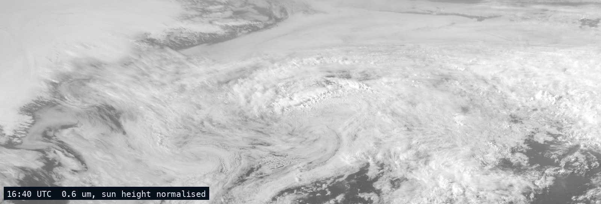
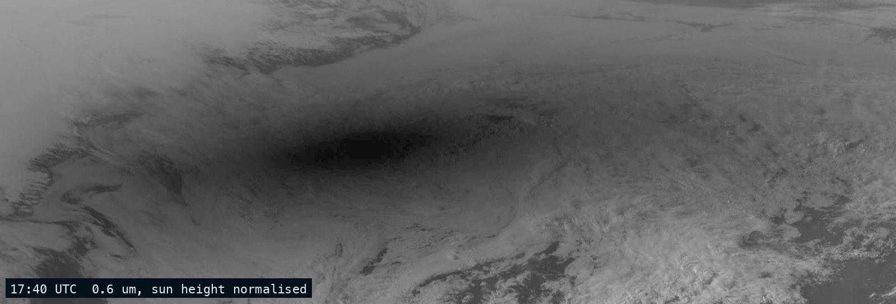
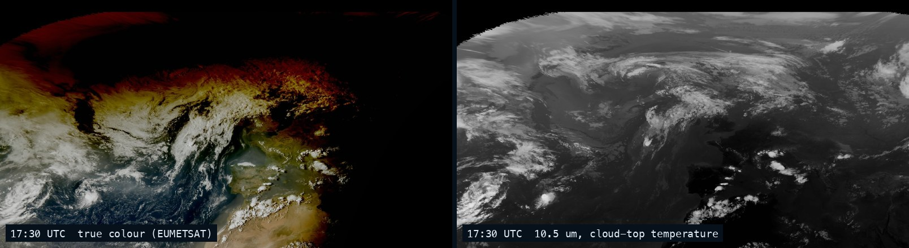
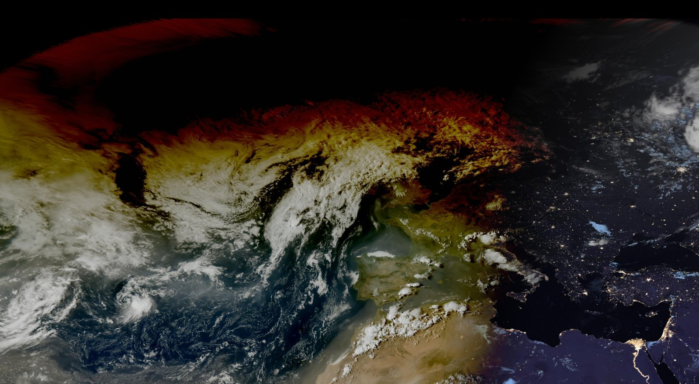
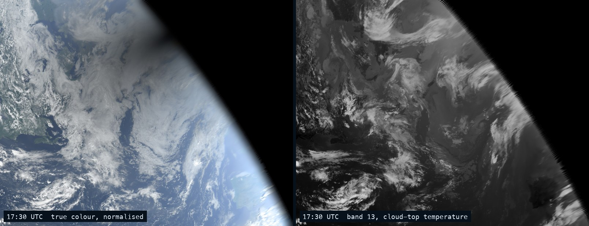
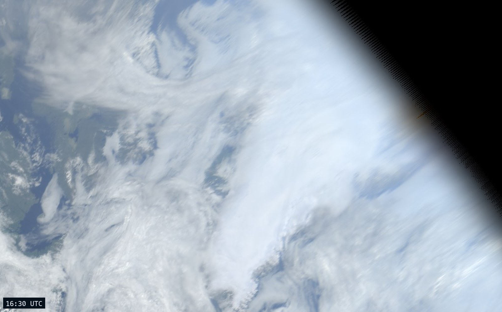
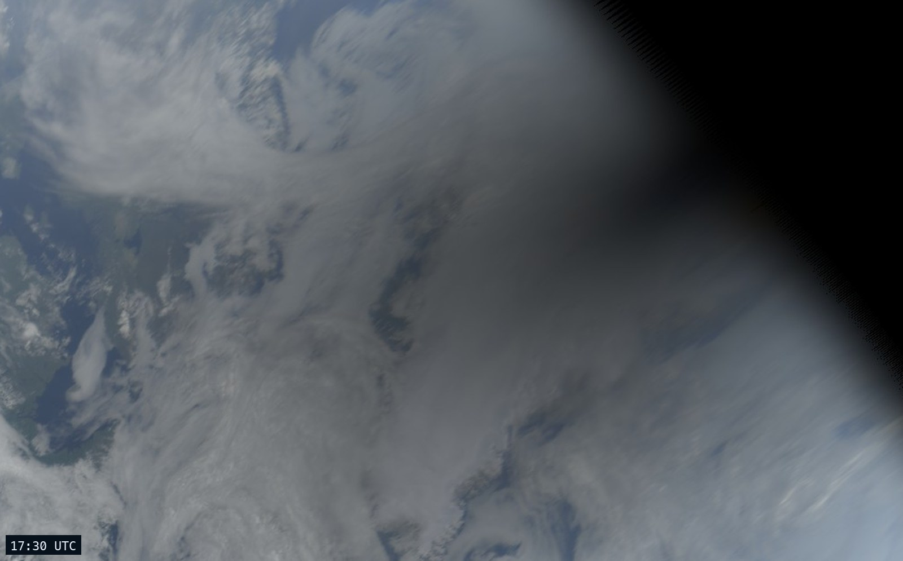

The total solar eclipse of 12 August 2026, seen from 36,000 km above the equator: the shadow sweeps from Greenland across Iceland to Spain in about two hours, and the clouds under it do not move.
Two weather satellites photograph their whole side of the planet every ten minutes. On the afternoon of 12 August the Moon's shadow crossed the top of both their pictures: Meteosat-12, over the Greenwich meridian, saw it from almost underneath; GOES-East, over the Americas, saw it on its horizon. This page is that afternoon, 14:00 to 20:30 UTC, from both, with the daily rise and fall of the sun taken out so that the only thing that darkens is the eclipse.
Europe's weather satellite hangs over the Gulf of Guinea, on the Greenwich meridian, and the whole path of the eclipse, Greenland to Spain, ran across the top left of its picture. Same afternoon, same window of the map as the GOES-East version below. Smooth stretches the forty real frames over half a minute with seven learned in-between frames per pair (RIFE), so the shadow glides; real frames is the same at six a second; plain light is the satellite's red band alone, with the height of the sun divided out, where the shadow is simply dark. Night comes in from the right as the afternoon goes on. The shadow comes in from the top at about 16:40, sits over Iceland at 17:40, and leaves through Spain at 18:20.



Mean brightness of the 0.6 µm band inside five boxes, each frame, divided by the cosine of the sun's zenith angle as on the GOES chart further down. Greenland, Iceland and Spain are the same boxes as there; Britain lay under a nine-tenths partial eclipse; the control is a cloud-free patch of the Sahara. One more correction is needed here that was not needed for GOES: EUMETSAT switches its visible band off progressively once the sun is under about thirteen degrees, and the control box, which should be a flat line, measures that fade directly, so the other four curves are divided by it. The climb of the northern curves past their morning level after 18:30, off the top of the chart, is the normalisation over-correcting a very low sun on ice, the same thing that hazes the east of the GOES picture.
| box | morning level | darkest | at (UTC) | fraction left |
|---|
GOES-East, at 75° west, and Meteosat-12, at 0°, are the same kind of satellite in the same kind of orbit, 36,000 km up over the equator, and both saw the whole event; the difference is the angle. From GOES-East the entire path lay on the very edge of the Earth, seen 82 to 85 degrees off vertical, which is why Spain was a smear there. From Meteosat, Spain is seen at 49 degrees and Iceland at 74, close enough that the umbra is a proper oval on the map rather than a bruise on the horizon; Greenland is as grazing from both, about 83 degrees, and the Labrador Sea, where GOES watched the shadow arrive, is past the edge of Meteosat's useful view. Both agree on the timing, deepest over Greenland at about half past five, Iceland ten minutes later, Spain at twenty past six UTC; Meteosat stamps a frame by its start and scans south to north, so Greenland's pixels in its 17:20 frame were taken near 17:30, and GOES, scanning north to south, stamps the same minute 17:30. The pictures differ more than the satellites do. The GOES frames on this page were built from the raw measurements, so their darkness is measured, and Meteosat's numbers, read off a rendered eight-bit picture, come out a little higher (13 and 6 per cent of the morning light over Greenland and Iceland, against 10 and 3), the dark end of a rendered picture being its least trustworthy part. And EUMETSAT's true colour is a finished product: already corrected for the height of the sun, with a correction for haze and the blue of the air that assumes a full sun, so under the umbra it over-corrects and paints the shadow the colour of sunset, and inside the umbra it gives up and goes black. The plain 0.6 µm band shows the same shadow as simple dark, and it is the one the curves are drawn from.

Forty frames, one every ten minutes, six a second: the whole afternoon in under seven seconds. Greenland is top left, Iceland top centre, Spain bottom right against the black where the satellite's view of the Earth ends. The shadow arrives from the top at about 16:40 UTC, is darkest over Greenland at 17:30, over Iceland at 17:50 and over Spain at 18:30, and is gone by 19:00. The smooth version adds three learned in-between frames per real pair (RIFE); as seen is the raw picture, in which the east also darkens simply because evening is coming.
Band 13 is the satellite's thermal channel: it measures the temperature of whatever it looks at, cloud top or sea surface, and does not care whether the sun is shining. If the darkening were weather, a front rolling in, it would show here too. It does not.

Mean brightness of the red band inside five boxes, each frame, after dividing by the cosine of the sun's zenith angle. Without that division the curve would fall all afternoon everywhere, because the sun does; with it, a flat line means an ordinary afternoon, and a dip means something got between the Earth and the sun. The southern control box, off the Bahamas, is there to show what flat looks like.
| box | morning level | darkest | at (UTC) | fraction left |
|---|
Greenland kept a tenth of its light, Iceland a thirtieth: the umbra, the Moon's full shadow, is only about 250 km across, but the ten-minute frames catch it squarely over both. Spain's number is less clean. It sits on the very edge of the disk, where the satellite looks through hundreds of kilometres of air, and by 19:30 UTC its sun is setting anyway; the eclipse dip at 18:30 is real, the slide to zero after it is night.


The same afternoon with nothing reprojected: the top right of GOES-East's full-disk picture, the curve being the edge of the Earth as seen from over the equator. The path of totality runs along that edge, which is why the shadow looks like a faint bruise on the horizon here and like a hole in the map above. Both are the same shadow; a map straightens the view, the satellite does not.
The Level-2 cloud and moisture imagery files (ABI-L2-MCMIPF), all sixteen bands at 2 km, one 370 MB file per ten minutes, read straight from the noaa-goes19 Open Data bucket. NASA's rendered tiles, which the other pages here use, only keep about a month and had already dropped 12 August. The raw archive keeps everything.
The satellite's own view is a perspective from 75.2° W over the equator. Each frame is resampled onto an equal-area map centred on the North Atlantic. True colour is the standard GOES recipe: red is band 2, blue is band 1, green is synthesised from both plus a tenth of the vegetation band, because the instrument has no green channel. No haze correction, no contrast stretch.
Every reflectance is divided by the cosine of the solar zenith angle at that pixel and minute, capped at five times, and faded to black where the sun is under six degrees. This removes the ordinary afternoon and leaves the anomaly. It over-brightens the far edge of the disk a little, where the sun is low and the air is thick; that is why the east of the normalised picture is hazier than the west.
Spain, France and the path's end over the Mediterranean are on the limb of GOES-East's disk, seen at a grazing angle and stretched. Iceland and Greenland are fine. The right satellite for Europe is Meteosat, which is why its view is at the top of this page; these GOES sections are the eclipse as America's weather satellite saw it, and stop where its view does.